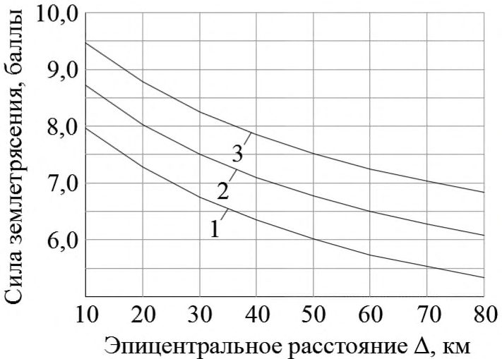
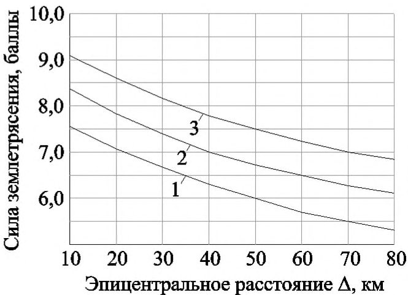
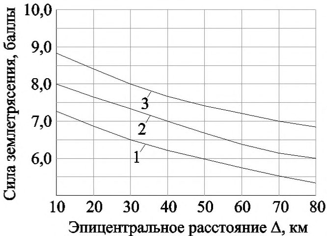
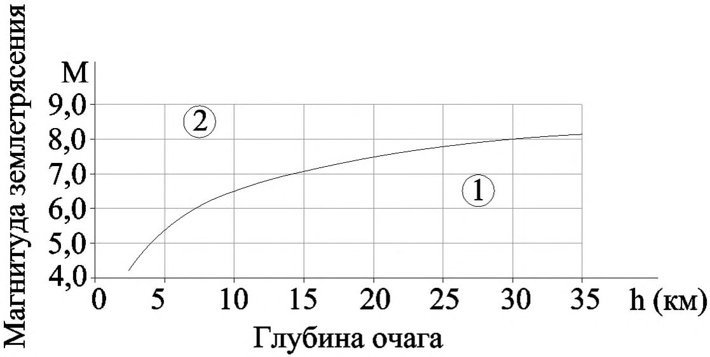
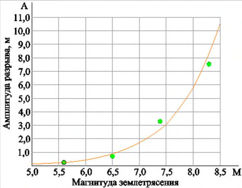
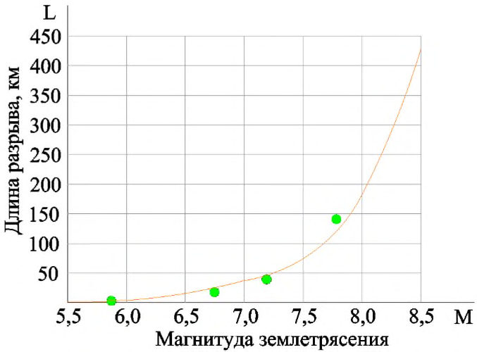

СП 270.1325800.2016 «Транспортные сооружения в сейсмических районах. Правила оце»
О документе: разработчики, утверждение, регистрация, ключевые слова
СВОД ПРАВИЛ
СП 270.1325800.2016
Издание официальное
Москва 2016
1 ИСПОЛНИТЕЛЬ -Общество с ограниченной ответственностью «Проектирование, обследования, испытания строительных конструкций» (ООО «ПОИСК»)
2 ВНЕСЕН Техническим комитетом по стандартизации ТК 465 «Строительство»
3 ПОДГОТОВЛЕН к утверждению Департаментом градостроительной деятельности и архитектуры Министерства строительства и жилищнокоммунального хозяйства Российской Федерации (Минстрой России)
4 УТВЕРЖДЕН приказом Министерства строительства и жилищнокоммунального хозяйства Российской Федерации от 16 декабря 2016 г. № 969/пр и введен в действие с 17 июня 2017 г.
5 ЗАРЕГИСТРИРОВАН Федеральным агентством по техническому регулированию и метрологии (Росстандарт)
6 ВВЕДЕН ВПЕРВЫЕ
В случае пересмотра (замены) или отмены настоящего свода правил соответствующее уведомление будет опубликовано в установленном порядке. Соответствующая информация, уведомление и тексты размещаются также в информационной системе общего пользования -на официальном сайте разработчика (Минстрой России) в сети Интернет
© Минстрой России, 2016
Настоящий нормативный документ не может быть полностью или частично воспроизведен, тиражирован и распространен в качестве официального издания на территории Российской Федерации без разрешения Минстроя России.
Дата введения -2017-06-17
УДК [69+699.841] ОКС 93.040, 93.060, 93.080, 93.100
Ключевые слова: транспортные сооружения, сейсмические районы, дороги, правила оценки повреждений сооружений
Введение
Настоящий свод правил разработан в соответствии с требованиями федеральных законов от 27 декабря 2002 г. № 184-ФЗ «О техническом регулировании», от 30 декабря 2009 г. № 384-ФЗ «Технический регламент о безопасности зданий и сооружений» и от 29 июня 2015 г. № 162-ФЗ «О стандартизации в Российской Федерации».
Свод правил предназначен для оперативной оценки состояния дорог после разрушительных землетрясений в удаленных и труднодоступных районах с использованием информации о последствиях стихийного бедствия при внесении временных изменений в порядок движения поездов и автомобилей на железных, автомобильных и городских дорогах в районе землетрясения, а также при планировании неотложных ремонтно-восстановительных работ, обеспечивающих транспортную доступность района стихийного бедствия.
Настоящий свод правил разработан ООО «ПОИСК» (руководитель работы д-р геол.-мин. наук, проф. Г.С. Шестоперов ). При разработке настоящего свода правил использованы материалы обследований дорог и зданий транспортного назначения, выполнявшиеся АО «ЦНИИС» (д-р техн. наук, проф. И.Я. Дорман , др техн. наук, проф. Г.С. Переселенков , д-р техн. наук А.С. Платонов , канд. техн. наук А.А. Решетняк , инж. А.В. Кручинкин , инж. В.А. Балаш , инж. Л.Л. Лапшин).
1Область применения
Оценки повреждений дорог распространяются на земляное полотно, верхнее строение пути, дорожные одежды, защитные сооружения, искусственные сооружения, здания, другие объекты, относящиеся к дорожной инфраструктуре, и примыкающие к дорогам склоны.
2Нормативные ссылки
В настоящем своде правил использованы нормативные ссылки на следующие документы:
ГОСТ 27751-2014 Надежность строительных конструкций и оснований. Основные положения
ГОСТ 31937-2011 Здания и сооружения. Правила обследования и мониторинга технического состояния. Общие требования
СП 14.13330.2014 «СНиП II-7-81* Строительство в сейсмических районах» (с изменением № 1)
ТРАНСПОРТНЫЕ СООРУЖЕНИЯ В СЕЙСМИЧЕСКИХ РАЙОНАХ Правила оценки повреждений дорог при землетрясениях в отдаленных и труднодоступных районах
Transport facilities in seismic area. Rules for evaluation of highway and railway structures seismic damages in far and inaccessible zones
СП 34.13330.2012 «СНиП 2.05.05-85* Автомобильные дороги»
СП 35.13330.2011 «СНиП 2.05.03-84* Мосты и трубы»
СП 119.13330.2012 «СНиП 32-01-95 Железные дороги колеи 1520 мм»
СП 122.13330.2012 «СНиП 32-04-97 Тоннели железнодорожные и автодорожные»
Примечание - При пользовании настоящим сводом правил целесообразно проверить действие ссылочных документов в информационной системе общего пользования -на официальном сайте Федерального агентства по техническому регулированию и метрологии в сети Интернет или по ежегодному информационному указателю «Национальные стандарты», который опубликован по состоянию на 1 января текущего года, и по выпускам ежемесячного информационного указателя «Национальные стандарты» за текущий год. Если заменен ссылочный документ, на который дана недатированная ссылка, то рекомендуется использовать действующую версию этого документа с учетом всех внесенных в данную версию изменений. Если заменен ссылочный документ, на который дана датированная ссылка, то рекомендуется использовать версию этого документа с указанным выше годом утверждения (принятия). Если после утверждения настоящего свода правил в ссылочный документ, на который дана датированная ссылка, внесено изменение, затрагивающее положение, на которое дана ссылка, то это положение рекомендуется применять без учета данного изменения. Если ссылочный документ отменен без замены, то положение, в котором дана ссылка на него, рекомендуется применять в части, не затрагивающей эту ссылку. Сведения о действии сводов правил целесообразно проверить в Федеральном информационном фонде стандартов.
3Термины и определения
В настоящем своде правил применены термины по ГОСТ 27751, ГОСТ 31937, СП 34.13330, СП 35.13330, СП 119.13330, СП 122.13330, а также следующие термины с соответствующими определениями:
- 3.1активный разлом
- Разлом земной коры или всей литосферы, по которому за последние 10 000 лет происходили смещения горных пород или возникали очаги землетрясений.
- 3.2амплитуда тектонического разрыва
- Величина относительного смещения в плоскости разрыва двух смежных точек, находящихся на противоположных крыльях разлома.
- 3.3афтершоки
- Более слабые повторные толчки, возникающие в том же очаге после наиболее сильного толчка в связи с постепенно затухающим процессом дробления горных пород в очаговой области земной коры или всей литосферы.
- 3.4вторичные сейсмодислокации
- Оползни, обвалы, сели, лавины, воднопесчаные потоки, грифоны, вертикальные разрывы в грунте и остаточные перемещения в грунте, вызванные распространением сейсмических волн.
- 3.5гипоцентр землетрясения
- Место начала разрушения горной породы в очаге землетрясения, завершающегося образованием (обновлением) тектонического разлома.
- 3.6глубина очага
- Расстояние от гипоцентра землетрясения до земной поверхности.
- 3.7землетрясение (тектоническое)
- Колебания земной поверхности и недр Земли в результате разрыва горных пород, вызывающего изменение напряженного состояния в очаге землетрясения и излучение сейсмических волн.
- 3.8земная кора
- Внешняя оболочка Земли толщиной на континентах 30-50 км, ограниченная снизу поверхностью Мохоровичича (см. 3.15).
- 3.9зона наибольших сотрясений
- Область наиболее интенсивных колебаний грунта, возникающих вблизи выходящих на земную поверхность или приближающихся к ней тектонических разрывов.
- 3.10изосейсты
- Линии, соединяющие пункты с одинаковой силой происшедшего землетрясения и разделяющие области с различной балльностью. Форма изосейст контролируется положением и магнитудой очага землетрясения, а также местными инженерно-геологическими и геоморфологическими условиями.
- 3.11литосфера
- Внешняя оболочка Земли толщиной на континентах около 70 км, ниже которой располагается менее жесткий (частично расплавленный) слой астеносферы.
- 3.12магнитуда
- Мера землетрясения, характеризующая в неявной форме энергию, выделившуюся при землетрясении в виде сейсмических волн.
- 3.13очаг землетрясения
- Область земной коры или всей литосферы, внутри которой заключены первичные необратимые деформации при данном землетрясении.
- 3.14первичные сейсмодислокации
- Разрывы земной поверхности, поднятия, опускания и горизонтальные перемещения участков земной коры.
- 3.15поверхность Мохоровичича
- Граница между корой и мантией при переходе через которую скачкообразно изменяются скорости продольных и поперечных сейсмических волн.
- 3.16сейсмические волны
- Колебательный процесс распространения быстрых изменений напряженно-деформированного состояния земной коры или всей литосферы из очага землетрясения на сопредельные участки недр и земной поверхности.
- 3.17сейсмодислокации
- Изменения земной поверхности, возникающие при землетрясениях.
- 3.18сила землетрясения
- Мера воздействия землетрясения на земную поверхность, строительные объекты, людей и животных.
- 3.19средние по сейсмическим свойствам грунты
- Покровные песчаноглинистые отложения, сейсмическая жесткость которых (произведение плотности грунта на скорость поперечных сейсмических волн) близка к 655 т/(м². с).
- 3.20тектонический разрыв
- Относительное смещение при землетрясении крыльев разлома.
- 3.21уравнение макросейсмического поля
- Математическое выражение, позволяющее приближенно определить силу землетрясения в известном пункте на равнинной местности для участков, сложенных средними по сейсмическим свойствам грунтами, по магнитуде землетрясения, глубине очага, эпицентральному расстоянию и эмпирическим коэффициентам.
- 3.22шкала MSK-64
- Сейсмическая шкала, служащая для оценки в баллах силы землетрясений в зависимости от реакций людей и животных, тяжести повреждений некоторых типов зданий и других эффектов колебаний грунта.
- 3.23эпицентр
- Точка на земной поверхности, расположенная над гипоцентром.
4Основные положения
Примечание - При организации визуальных обследований в зоне землетрясения следует иметь в виду, что повторяющиеся подземные толчки силой 6 баллов и более приводят к уменьшению фактической несущей способности и дополнительным деформациям сооружений. Для купирования выявленных дефектов рекомендуются ремонт и усиление несущих конструкций по временной схеме (устройство временных опор в виде шпальных клеток, железобетонных рубашек поврежденных каменных опор и др.).
- сооружения (конструкции) с близким к предельному физическим износом (сквозная коррозия металла гофрированных труб, шпунта и др.), а также с местными и общими деформациями, указывающими на возможность отказов по ГОСТ 27751;
- конструкции, на которые не распространяются нормы сейсмостойкого строительства [например, дорожные знаки, перильные ограждения, устройства СЦБ (сигнализации, централизации и блокировки) и связи].
Примечание - Для продолжения эксплуатации сооружений, имеющих близкий к предельному физический износ и недопустимые деформации, требуется выполнение срочных работ по восстановлению работоспособности конструкций с контролируемым ограничением движения транспортных средств и пешеходов на время проведения предаварийных работ.
- конструкции, имеющие значительный физический износ, а также деформации, затрудняющие нормальную эксплуатацию и снижающие долговечность сооружений (сквозные трещины в кладке, разрушение защитного слоя бетона, осадки земляного полотна и опор мостов, изменяющие профиль дороги, и др.);
- объекты, техническое состояние которых является удовлетворительным, но с несущими конструкциями, не соответствующими требованиям действующих норм проектирования в сейсмических районах.
Примечание - Для сооружений, имеющих значительный физический износ и деформации (ограниченно-работоспособное состояние), продолжение эксплуатации возможно при введении ограничений на вес и скорость транспортных средств с проведением капитального ремонта объекта в течение ближайших пяти лет.
Примечание - Сооружения в сейсмостойком исполнении подразделяются на три класса. Сооружения класса сейсмостойкости III должны выдерживать без разрушения землетрясения, повторяющиеся в месте расположения объекта в среднем один раз за 500 лет. Сооружения классов сейсмостойкости II и I должны выдерживать землетрясения, повторяющиеся с интервалом 1000 лет и от 2000 до 5000 лет соответственно. Возможные повреждения сооружений классов сейсмостойкости I и II при землетрясениях в настоящем своде правил не рассматриваются.
Примечание - К неустойчивым при землетрясениях относятся склоны, на которых происходили или прогнозируются оползневые и обвально-осыпные процессы.
Примечание -Из-за повреждений и разрушений дорог доступность района стихийного бедствия для спасателей и тяжелой строительной техники оказывается сильно ограниченной, что в решающей степени влияет на эффективность спасательных работ и увеличивает число необратимых (летальных) исходов.
5Определение силы землетрясения
где 𝑀 - магнитуда происшедшего землетрясения по данным Геофизической службы РАН;
∆ - расстояние от эпицентра землетрясения до рассматриваемого участка, км; h - глубина очага происшедшего землетрясения, км; 𝑏 , 𝑠 , 𝑐 - коэффициенты уравнения макросейсмического поля; в среднем для сейсмоопасной территории Российской Федерации принимают 𝑏 = 1,5; 𝑠 = 3,5; 𝑐 = 3,0 .
Примечание - Коэффициенты 𝑏 , 𝑠 , 𝑐 , а также формы изосейст могут быть уточнены по рекомендациям региональных сейсмологических организаций.
а) h = 10 км

в) h = 20 км

1 - землетрясение с магнитудой 𝑀 = 6,0 ;
2 - то же, с магнитудой 𝑀 = 6,5 ;
3 - то же, с магнитудой 𝑀 = 7,0
Рисунок 5.1 -Зависимость силы землетрясения от эпицентрального расстояния ∆ при глубинах очага 𝟏𝟎 , 𝟏𝟓 и 𝟐𝟎 км
где h - глубина очага, км.

- 1 - верхняя часть очага находится под земной поверхностью;
- 2 - верхняя кромка очага выходит из недр
где 𝐴 - вероятная амплитуда разрыва, м.

- средние значения частных совокупностей амплитуд разрывов;
- график зависимости 𝐴 = 10 0,54𝑀-3,56
Рисунок 5.3 - Зависимость амплитуды разрыва от магнитуды землетрясения
Примечание - Найденная по формуле (5.3) амплитуда разрыва располагается примерно посредине длины участка разрывных сейсмодислокаций. Фактическое распределение амплитуды разрыва по его длине определяется по данным полевого инженерно-геологического обследования сейсмотектонических дислокаций.
где 𝐿 - вероятная протяженность магистрального разрыва, км.

- средние значения частных совокупностей длин разрывов;
- график зависимости 𝐿 = 10 0,71𝑀-3,41
Рисунок 5.4 - Зависимость длины разрыва от магнитуды землетрясения
где 𝐴 - площадь, ограниченная изосейстой 𝐼 -го балла, км² .
где α = 𝑏𝑀+𝑐-𝐼 𝑠 ; здесь 𝑏, 𝑠, 𝑐 - коэффициенты уравнения макросейсмического поля;
𝐼 - сила землетрясения на границе эллипса площадью 𝐴; h - глубина очага, км.
6Оценка повреждений транспортных сооружений
Примечание - Отсутствие повреждений несущих и ограждающих конструкций, требующих введения ограничений на движение поездов, автомобилей и пешеходов, обозначается символом d0 .
СП 270.1325800.2016 блоков плитных пролетных строений. Отрыв от передних стенок бетонных устоев обратных стенок (крыльев). Пластические деформации и наклон опор контактной сети, приводящие к обрыву проводов. Опрокидывание трансформаторов на открытых участках тяговых подстанций. Частичное разрушение пассажирских платформ. Трещины и разрывы в порталах горных тоннелей и галерей. Разрушение самонесущих каменных стен, обрушение стропильных конструкций транспортных зданий.
Примечание - Характерными повреждениями степеней d1 -d4 являются местные деформации, общие деформации, исчерпание прочности и потеря устойчивости конструкций соответственно. Повреждения степени d5 включают в себя полный отказ сооружений с одновременным изменением инженерно-геологических, геоморфологических и гидрологических условий на разрушенном участке дороги. В высокогорных районах объем единовременного выноса горной массы со склонов при катастрофических землетрясениях может превысить 10 млн м³ .
Таблица 6 . 1 Степени повреждений наземных транспортных объектов при землетрясениях силой от 6 до 10 баллов
| Сила землетрясения на ровных участках со средними инженерно- геологическими условиями 𝐼 , баллы | Степени повреждения сооружений | Степени повреждения сооружений | Степени повреждения сооружений |
|---|---|---|---|
| Сооружения в несейсмостойком исполнении | Сооружения пониженной сейсмостойкости | Сооружения нормативной сейсмостойкости | |
| 6 | d 1 | d 0 | d 0 |
| 7 | d 2 | d 1 | d 0 |
| 8 | d 3 | d 2 | d 1 |
| 9 | d 4 | d 3 | d 2 |
| 10 | d 5 | d 4 | d 3 |
Примечания
1 В случаях особо неблагоприятных инженерно-геологических (крайне слабые водонасыщенные грунты, подверженные разжижению) и геоморфологических (участки сейсмогравитационных воздействий) условий, а также вблизи сейсмотектонических разрывов возможно увеличение тяжести повреждений на одну степень, но не более степени d5 .
- 2 На участках выхода на земную поверхность прочных скальных пород тяжесть повреждений сооружений уменьшается на одну степень, но не менее степени d0 .
- 3 Настоящая таблица не распространяется на сооружения, имевшие до землетрясения ограниченно-работоспособное или предаварийное состояние.
7Особенности содержания дорог в сейсмических районах
Наибольшие социально-экономические потери при 10-балльных землетрясениях вызывают оползни, обвалы, лавины, сели, цунами, а также выходящие на земную поверхность сейсмотектонические разрывы.Защита от катастрофических природных воздействий (устройство селезащитных плотин, цунамизащитных стен, цементация слабых грунтов и др.) требует привлечения значительных ресурсов. Наиболее эффективным способом защиты от опасных геологических явлений служит удаление дорог от неустойчивых горных склонов, цунамиопасных побережий и других мест проявления катастрофических поражающих факторов 10-балльных землетрясений.
Для мостов и насыпей пониженной сейсмостойкости размеры областей повреждений допускается приближенно находить по графику (рисунок 7.1) в зависимости от магнитуды землетрясения.

- насыпи
Рисунок 7.1 -Наибольшее расстояние от инструментального эпицентра до границы зоны повреждений мостов и насыпей при землетрясениях
8Основные правила обеспечения безопасной эксплуатации железных дорог в зоне землетрясения
Примечание - При силе землетрясения менее 6 баллов возможны ухудшение технического состояния сооружений в несейсмостойком исполнении, а также активизация склоновых процессов вблизи железных дорог.
Состояние дороги уточняется осмотром верхнего строения пути, земляных и других сооружений на станциях и перегонах, а также транспортных зданий согласно заранее разработанному плану, вводимому в действие управлением дороги.
АПриложение А. (справочное)
Повреждения железной дороги при разрушительном землетрясении в Армении 7 декабря 1988 г.
Согласно сообщениям сейсмологических организаций Армении, России и США землетрясение, происшедшее в Армении 7 декабря 1988 г. (Спитакское землетрясение), имело следующие стандартные параметры:
- широта и долгота инструментального эпицентра основного толчка φ°𝑁 = 40,92 ; λ°𝐸 = 44,20 ;
- глубина очага h = 11 км;
- магнитуда 𝑀 = 6,8 (среднее значение по 17 наблюдениям).
Инструментальный эпицентр располагался в 10 км к северу от г. Спитак. Эпицентры 55 афтершоков, происшедших в течение первых суток после основного толчка, располагались в полосе шириной около 25 км, вытянутой на 80 км в субширотном направлении, соответствующем простиранию Памбак-Севанского глубинного разлома.
Сейсмотектонические дислокации вышли на земную поверхность на участке длиной около 35 км. На концах магистрального разрыва и на участках рыхлых четвертичных отложений дислокации исчезали. Наибольшее развитие поверхностные сейсморазрывы получили на центральном участке длиной около 10 км, расположенном между г. Спитак и железнодорожной станцией Налбанд. Обнаруженные здесь дислокации включали в себя взбросовую и сдвиговую составляющие. Относительное смещение крыльев разлома около 1,5 м (местами до 2,0 м). Сила землетрясения в эпицентре по макросейсмическим данным была равна 9 баллам.
По правилам дистанционных оценок настоящего свода правил критерий (см. 5.4) выхода сейсмотектонического разрыва на земную поверхность выполняется. Протяженность магистрального разрыва 𝐿 = 10 0,71𝑀-3,41 = 10 0,71∙6,8-3,41 = 26,2 км. Математическое ожидание наибольшей амплитуды разрыва 𝐴 = 10 0,54𝑀-3,56 = 10 0,54∙6,8-3,56 = 1,29 м. Длина и ширина зоны наибольших сотрясений составили 38,2 и 22 км соответственно. Сила землетрясения вблизи тектонических разрывов по 5.12 была равна 9 баллам, что соответствует оценкам по шкале MSK-64.
Железная дорога, соединяющая города Тбилиси и Ереван, была построена в 1898-1902 гг., электрифицирована в 1951-1952 гг. В последующий период проводились работы по развитию и модернизации дороги, включая частичную замену пролетных строений мостов и опор контактной сети.
На участке наибольших сотрясений между г. Спитак и железнодорожной станцией Налбанд железнодорожный путь проложен по долине р. Памбак. Здесь имеются насыпи, выемки, малые и средние мосты, автодорожные путепроводы через пути железной дороги, галерея, тоннель, транспортные здания и другие объекты транспортной инфраструктуры.
Наибольшие повреждения при землетрясении получила станция Налбанд. Станция устроена на площадке из пылеватого водонасыщенного песка, добытого из отложений р. Памбак. При строительстве насыпь была уложена на залегающую с наклоном в сторону р. Памбак поверхность туфа. Имевшая пониженную сейсмостойкость станция расположена в непосредственной близости от разлома, скрытого покровными отложениями. Фактическая тяжесть повреждений по 6.5.1 соответствует прогнозной по таблице 6.1.
При землетрясении часть насыпи на протяжении более 200 м из-за разжижения основания потеряла устойчивость. Насыпной грунт разделился на оползневые ступени, сместившиеся вниз по склону вместе со станционными путями. Относительное смещение ступеней (стенки отрыва) достигало 1,5-2,0 м. Сейсмооползнем полностью разрушены станционные пути, здание станции Налбанд, контактная сеть, устройства СЦБ и связи, опрокинуты вагоны товарного поезда. Повышенная тяжесть повреждений станции вызвана близостью тектонических разрывов и неблагоприятными местными инженерногеологическими условиями.
Барьерные места на дороге образовались в скальных выемках и полувыемках пониженной сейсмостойкости в результате обвалов породы с откосов и склонов на путь. Обрушение глыб объемом до 10 м³ привело к частичному разрушению улавливающих стен из каменной кладки, опрокидыванию железобетонных опор контактной сети. Насыпи на подходах к мостам осели примерно на 50 см. Для восстановления проектных отметок земляного полотна потребовалось уложить около 5 000 м³ грунта. Обвалы породы на путь и осадка насыпей на подходах к мостам относятся к повреждениям степени d4, соответствующей прогнозу повреждений откосов и земляного полотна по таблице 6.1.
На станциях Спитак и Калтахчи землетрясением уничтожены здания вокзалов, тяговых подстанций, складов. Сброшено с опор тяжелое электротехническое оборудование (трансформаторы и выключатели подстанций). Около половины облегченных металлических опор контактной сети пониженной сейсмостойкости были сильно повреждены, что потребовало их замены или усиления оттяжками. Фактическое состояние электротехнического оборудования и опор контактной сети пониженной сейсмостойкости соответствовало повреждениям степени d3 по 6.4.2. Прогнозная тяжесть повреждений по таблице 6.1 оценивается степенью d3.
Мосты пострадали значительно меньше, чем земляное полотно, транспортные здания, контактная сеть и оборудование тяговых подстанций. Этот факт объясняется благоприятными инженерно-геологическими условиями в местах расположения мостов, а также тем, что их конструкции должны выдерживать большие горизонтальные и вертикальные нагрузки от подвижного состава.
Сильнее других был поврежден мост пониженной сейсмостойкости в г. Спитак, построенный в 1945 г. по схеме 2×16 м. Пролетные строения моста балочные из монолитного железобетона. Устои из бутовой кладки с арочными проемами. При толчке силой 9 баллов в кладке передней стенки левобережного устоя образовался разрыв, отделивший часть передней стенки от устоя. Сквозные трещины образовались также в кладке промежуточной опоры и правобережного устоя. Пропуск нагрузки по мосту из-за полученных повреждений был невозможен. Фактическая тяжесть повреждений моста по 6.4.2 равна d3, что совпадает с прогнозной оценкой по таблице 6.1.
Мост восстановлен по временной схеме за 6 сут. Вместо демонтированного железобетонного пролетного строения установлено металлическое. Левобережный устой полностью разобран с заменой поврежденной кладки бетонными блоками на цементном растворе. Промежуточная опора усилена железобетонной рубашкой. В проеме правобережного устоя установлена шпальная клетка с плотной подклинкой в замке свода.
Тоннель и галерея пониженной сейсмостойкости, сооруженные на участках выхода на поверхность скального грунта, получили повреждения в виде трещин раскрытием до 5-7 мм в каменной кладке. Плитное железобетонное перекрытие галереи сдвинулось на 20-25 мм. Припортальные улавливающие стены повреждены ударами падающих со склона скальных обломков.
После землетрясения потребовалось восстановить более 40 км рельсового пути, который при сейсмическом воздействии деформировался от сжатия и осадок грунта. В некоторых местах были разрушены стыки рельсов. В кривых участках пути образовались углы в плане. Землетрясение вызвало аварии подвижного состава при сходе вагонов с рельсового пути.
Избежать деформаций пути при землетрясениях силой 9 баллов и более практически невозможно. Поэтому при проектировании и эксплуатации дорог в районах разрушительных землетрясений следует предусматривать резервирование необходимого запаса рельсов, шпал и других элементов верхнего строения пути, а также щебня и других строительных материалов и конструкций для немедленного развертывания работ по устранению возникших повреждений.
Наблюдавшиеся при землетрясении повреждения железной дороги в основном соответствовали степени d3. В отдельных случаях (участки слабых водонасыщенных грунтов, места выхода на поверхность тектонических разрывов, транспортные здания в несейсмостойком исполнении) повреждения транспортной инфраструктуры оцениваются степенью d4 по настоящему своду правил.